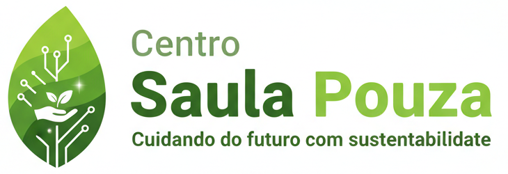

“Cuidando do futuro com sustentabilidade”

Fundado com a missão de promover soluções sustentáveis, o Centro Saula Pouza atua em projetos de tecnologia verde e responsabilidade ambiental.
Oferecer serviços e produtos que respeitam o meio ambiente e incentivam práticas sustentáveis.
Trabalhamos em conjunto com empresas que compartilham nossa visão de sustentabilidade.
1. O que é o Centro Saula Pouza?
Uma empresa fictícia
voltada para soluções sustentáveis.
2. Como posso ser parceiro?
Entre em contato pelo e-mail
comercial.
3. Vocês oferecem consultoria?
Sim, em projetos de
tecnologia verde.